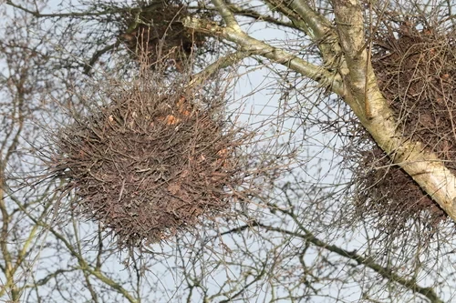

丛枝
一个芽点生出成簇细枝
这是与该表现相符的一种可能原因，请结合下方特征核对。

先看哪里
比较枝簇与正常分枝，检查周围是否曾修剪或有伤口。
可能原因与下一步
萌芽受刺激、虫螨或病害都可能造成异常分枝。拍下整株及枝簇的清晰照片求证。
怎样区分相似问题
剪口下方同时萌发几支新梢可属正常反应。如果未修剪处长出一簇异常短细、挤在一起的枝条，更值得排查。
现在可以做什么
沿枝梢找到萌发点，记录附近是否有旧剪口、肿大或嫁接口。暂时不要用这簇枝条作繁殖材料。
接下来观察什么
下一轮抽梢时对比异常枝和正常枝。若远离剪口处反复出现枝簇，或更多枝条受影响，可按植物种类请人鉴定。